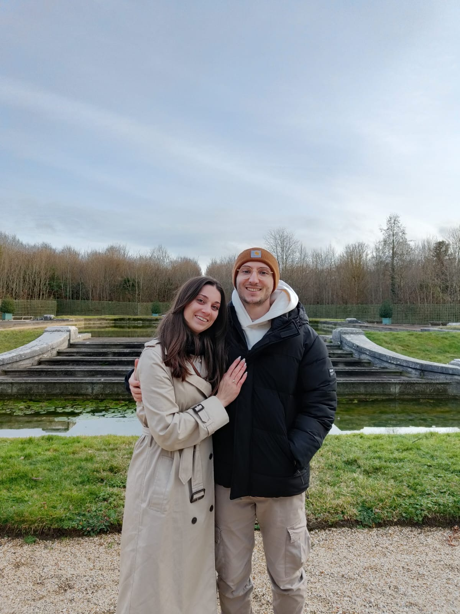

Our Story
We are so happy you are part of this chapter.

Lucy and Cosmin met in the summer of 2022, when Lucy was finishing a project for her master's degree in Bucharest. Lucy was on the train back from a weekend in Bulgaria, when Cosmin happened to be sitting in her seat. After a train ride home together, they exchanged contact information, and what started as seeing each other in friend group settings, soon became planning dates for just the two of them. They spent the rest of that summer inseparable, and when Lucy went back home at the end of the summer, Cosmin promised to visit her in the United States.
True to his word, Cosmin visited in October, which also happened to be his first time in the United States. His first trip to the U.S. included exploring Little Rock, celebrating Halloween, and even catching a Mavericks–Jazz game in Dallas.
After a year of long distance, Lucy moved to Bucharest when she graduated from her master's program.
They spent the next two years living in Bucharest, discovering new favorite restaurants, going to the movies, taking weekend excursions, and visiting family in Eforie Sud and in the United States.
After two years of living together in Bucharest, Lucy's job brought her back to the United States. They made sure to plan regular trips to see each other after she moved away, and it was during one of these visits, on a post-holiday trip to Paris, in the gardens at Versailles, Cosmin asked Lucy to marry him.